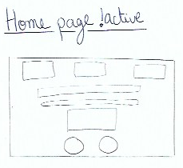
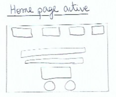
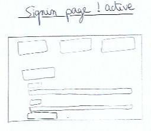
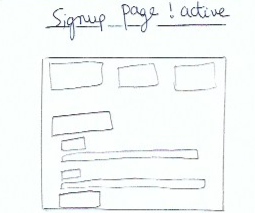
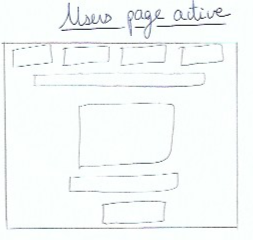
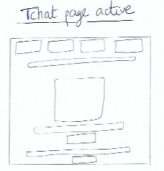

<div class="main-block">

    <div class="body-content">
        <!-- Message if user disconnected -->
        <div *ngIf="!authService.isAuth" class="text-center">Welcome to my tchat online, you must log in to have access to the online tchat</div>

        <!-- Message if user connected -->
        <div *ngIf="authService.isAuth" class="text-center">Welcome to my tchat online, you are now logged</div>

        <!-- Wireframe -->
        <div class="wireframe">
            <p>Wireframe of project</p>

            <div class="images">
                
                
                
                
                
                
            </div>
        </div>
    </div>

    <!-- Social networks -->
    <div class="row social-content">
        <ul class="social-network social-circle">
        <li><a target="_blank" href="https://github.com/Roulioo" class="icoGithub" title="Github"><i class="fa fa-github"></i></a></li>
        <li><a target="_blank" href="https://www.linkedin.com/in/julio-pereira-499a15134/" class="icoLinkedin" title="Linkedin"><i class="fa fa-linkedin"></i></a></li>
        </ul>
    </div>
</div>
